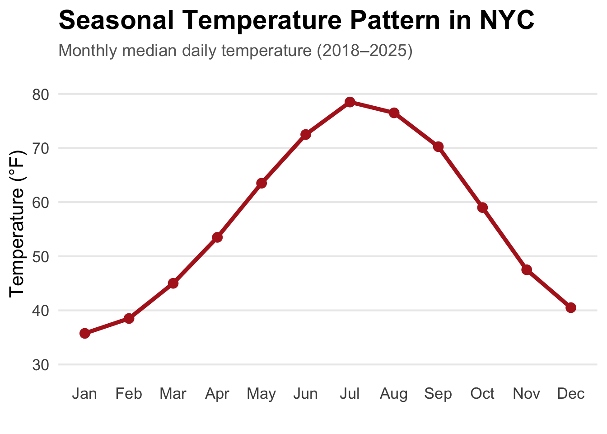
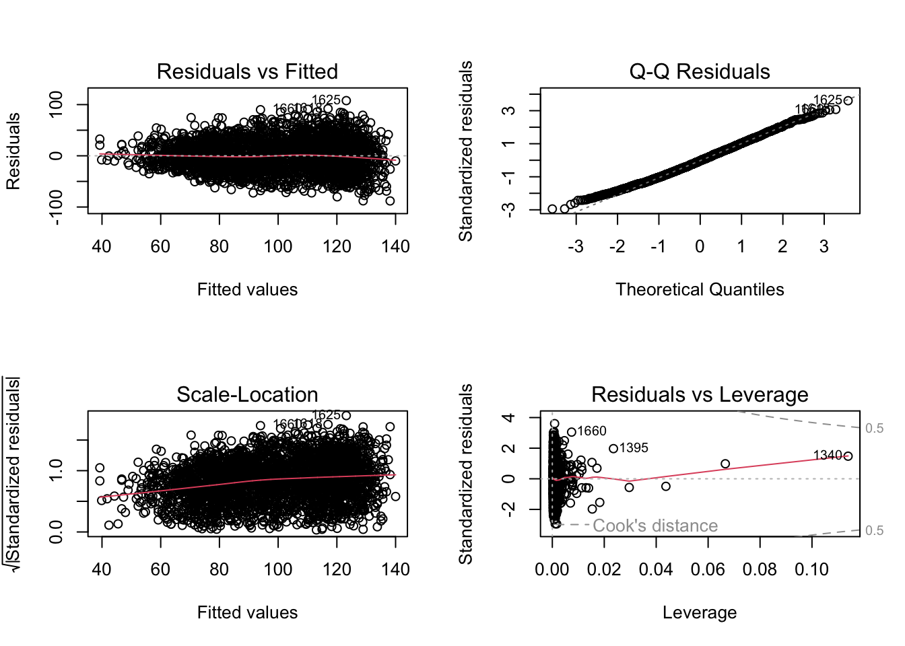

Weather, Humans, and Rats: How Temperature and Rain Shape 311 Rodent Reporting in NYC
Author
Shreya Karki
Published
December 13, 2025
1 Introduction
New York City’s 311 system receives tens of thousands of rodent-related complaints each year. These reports are widely used as research inputs, media indicators, and policy metrics to infer where rats are “most active.” Yet 311 data measure more than just rats: they also measure human behavior, including when people are outdoors, how comfortable they feel, and how motivated they are to report what they see.
Weather plays a central role in both processes. Warm and dry conditions increase outdoor activity and visibility, while cold or rainy weather keeps people inside. Likewise, rat biology is strongly temperature-dependent: rats forage more, travel more, and interact with human environments more frequently in warm conditions.
How do temperature and precipitation influence the reporting of rodent sightings in NYC?
Understanding this distinction is essential for interpreting complaint patterns accurately. If weather is a major driver of reporting, then spikes in complaints may not indicate a “rat surge,” but instead simply improved conditions for humans to observe and report rats. The goal of this analysis is to quantify that relationship and evaluate its strength.
Role in Group Project:
This analysis corresponds to Sub-Question 1 (SQ1): Weather Favorability, part of the Objective Rat Conditions framework. Responsibilities for this SQ included acquiring NOAA weather data, processing and standardizing temperature and precipitation metrics, constructing the Weather Favorability Score (WFS), and evaluating how weather systematically shapes 311 reporting behavior.
2 Data Acquisition
This project uses two independent datasets:
NYC 311 Rodent Complaints — from the NYC SODA API; and
NOAA Daily Weather Data — from the CDO API (GHCND, Central Park Station).
Both are retrieved using httr2, which ensures transparency and reproducibility. To avoid long render times, raw API pulls were executed once and saved locally; the code below shows the full workflow used.
2.1 NYC 311 Rodent Complaint Data (Socrata API)
The Socrata API provides event-level complaint data with timestamps and locations. Because large requests require pagination, a custom function manages offset-based downloads across multiple pages.
Weather data comes from the Central Park GHCND station (USW00094728), one of the most complete and stable weather records in the country. The CDO API limits requests to 1,000 rows, so data are retrieved year-by-year with automated pagination.
Load Token
Code
# NOAA API requires a personal token. Storing it in .Renviron# improves reproducibility, prevents accidental GitHub leaks, and# follows best practices taught in STA 9750.noaa_token <-Sys.getenv("NOAA_TOKEN")if (noaa_token =="") {stop("NOAA_TOKEN not found — please add it to your .Renviron file.")}
Base NOAA Request Template
Code
# Templated request stores shared parameters:# - datasetid: Daily Summaries (GHCND)# - stationid: Central Park weather station# - breaking into 1-year chunks due to API limits## Using a template prevents duplication in pagination requests# and ensures consistency across all API calls.noaa_base <-"https://www.ncei.noaa.gov/cdo-web/api/v2/data"noaa_template <-request(noaa_base) |>req_headers(token = noaa_token,Accept ="application/json" ) |>req_url_query(datasetid ="GHCND",stationid ="GHCND:USW00094728",units ="standard",datatypeid ="TMAX,TMIN,PRCP",includemetadata ="true", limit =1000 )
Year-by-Year Download Function
Code
# NOAA Daily Weather Data (GHCND — Central Park Station)# Download Years: 2018–2025# Load NOAA TOKEN (stored securely in ~/.Renviron)noaa_token <-Sys.getenv("NOAA_TOKEN")if (noaa_token =="") {stop("NOAA_TOKEN not found — please add it to your .Renviron file.")}# Build Base NOAA Request Templatenoaa_base <-"https://www.ncei.noaa.gov/cdo-web/api/v2/data"noaa_template <-request(noaa_base) |>req_headers(token = noaa_token,Accept ="application/json" ) |>req_url_query(datasetid ="GHCND",stationid ="GHCND:USW00094728", # Central Parkdatatypeid ="TMAX,TMIN,PRCP", # Needed variablesunits ="standard",includemetadata ="true",limit =1000# NOAA max per page )# Function: Download a single year of data (fully paginated)download_noaa_year <-function(year) {message("Downloading data for ", year, " ...") start_date <-paste0(year, "-01-01") end_date <-paste0(year, "-12-31")# 3A. Request metadata for row count meta <- noaa_template |>req_url_query(startdate = start_date,enddate = end_date,limit =1 ) |>req_perform() |>resp_body_json(simplifyVector =TRUE) total_count <- meta$metadata$resultset$countmessage(" Records found: ", total_count)if (is.null(total_count) || total_count ==0) {message(" No data for ", year)return(NULL) }# 3B. Create pagination offsets offsets <-seq(0, total_count, by =1000)# 3C. Download each batch batches <-map(offsets, function(off) {message(" Retrieving batch (offset = ", off, ")") batch <- noaa_template |>req_url_query(startdate = start_date,enddate = end_date,offset = off ) |>req_perform() |>resp_body_json(simplifyVector =TRUE)# Convert results to tibble if data existsif (!is.null(batch$results) &&length(batch$results) >0) {as_tibble(batch$results) } else {NULL } })# Bind all batches into one tibble bind_rows(batches)}# Download Weather for All Years: 2018–2025years <-2018:2025weather_list <-map(years, download_noaa_year)weather_raw <-bind_rows(weather_list)message("Total NOAA records downloaded: ", nrow(weather_raw))glimpse(weather_raw)
The goal of cleaning is to produce a daily merged dataset with one row per date capturing both weather conditions and complaint totals.
3.1 Daily 311 Complaint Counts
The 311 data are aggregated to daily frequency by counting the number of rodent complaints per calendar day.
Code
# Convert timestamp to Date and aggregate calls to daily frequency.# This ensures alignment with NOAA daily weather records.rodent_daily <- rodent_raw |>mutate(date =as_date(created_date)) |>filter(!is.na(date)) |>group_by(date) |>summarise(calls =n(), .groups ="drop")head(rodent_daily)
3.2 Daily Weather Metrics
NOAA data are reshaped from long to wide format and converted from tenths-of-unit to actual values
Code
weather_daily <- weather_raw |>mutate(date =as_date(date),value =suppressWarnings(as.numeric(value)) ) |>filter(datatype %in%c("TMAX", "TMIN", "PRCP")) |>group_by(date, datatype) |>summarise(value = value[!is.na(value)][1], .groups ="drop" ) |>pivot_wider(names_from = datatype,values_from = value ) |>mutate(# TMAX and TMIN are in °F TMAX = TMAX,TMIN = TMIN,# PRCP is in tenths PRCP = PRCP /10,# Mean daily temperature TEMP = (TMAX + TMIN) /2 ) |>arrange(date)
4 Merging Weather and 311 Data
Once both datasets share a daily index, they are merged into a single analytical table. A right join is used to retain the complete weather calendar; days with no complaints appear as NA in the calls column and represent genuine zero-reporting days.
Code
# Merge daily rodent calls with daily weather.# right_join() keeps all weather dates (complete calendar),# ensuring that NA rodent-call days still appear (useful for analysis).df <- rodent_daily |>right_join(weather_daily, by ="date") |>arrange(date)glimpse(df)
5 Weather Favorability Score (WFS)
A combined metric is constructed to summarize how “rat-friendly” the weather is on each day. Temperature and precipitation operate in opposite directions: warmth generally promotes rat activity, while heavy rain suppresses both rat movement and human time outdoors.
To place these variables on a common scale, daily temperature and precipitation are standardized:
The Weather Favorability Score (WFS) is then defined as:
WFS =TEMP z −PRCP z.
Higher values indicate days that are warm and dry relative to the overall sample, while lower values correspond to colder or wetter conditions.
NoteHow to Interpret WFS
A one-unit increase in WFS corresponds to a simultaneous move toward warmer and drier conditions relative to the sample average. Negative values represent unusually cold and/or wet days; positive values represent unusually warm and dry days.
6 Exploratory Patterns in Weather and Reporting
Understanding how weather and complaints behave over time provides important context for interpreting statistical models. The patterns below show that weather-driven behavioral changes appear visibly in the raw data before any modeling is applied.
6.1 Temperature Over Time
NYC temperature follows a highly regular seasonal cycle:
Peaks each July–August
Deep troughs in January–February

Interpretation : Temperature displays a consistent annual cycle, with warm peaks in midsummer and deep troughs in winter. This seasonal rhythm sets expectations for complaint patterns, since both rat activity and human outdoor behavior are strongly temperature-dependent. Rising temperatures in spring reliably precede increases in complaints.
6.2 Long-Term: Seasonal Complaint Cycles
Interpretation: 311 complaints rise and fall almost in lockstep with the temperature cycle. This pattern reflects long-term seasonal forces, warm months bring more outdoor activity and more rat visibility, while cold months suppress both. Because this variation occurs every year, it suggests that large portions of complaint volume are shaped by the climate calendar rather than changes in rat populations.
6.3 Daily Variability: Immediate Weather Effects
The Weather Favorability Score (WFS) ranges from -17.3 to 2.4.
While WFS shows seasonal waves (similar to temperature), its day-to-day variation reveals immediate effects:
Interpretation: Even within the same season, daily weather matters. A rainy June day brings fewer complaints than a sunny June day, despite identical seasonal conditions. This demonstrates an immediate behavioral response: people report more rats on warm, dry days and fewer on cold, wet days, regardless of the month. The effect is not seasonal it is instantaneous.
6.4 Interactive Weather & Rodent Explorer Dashboard
To complement the static plots in this report, an interactive dashboard is provided. The dashboard summarizes the weather–complaint relationship through two linked views:
Time-Series Explorer : displays daily values for temperature (°F), precipitation (mm), and complaint counts across any selected year or the full 2018–2025 period.
Scatter Explorer : shows how complaint volume varies with temperature or precipitation, with an optional regression fit for quick comparison across different time windows.
The dashboard is deployed on shinyapps.io and can be accessed below.
7 Association Between Weather and Reporting
This section moves from description to association to answer:
Are rodent complaints systematically higher on warm, dry days?
7.1 Correlation and Linear Model
Code
df_complete <- df |>drop_na(TEMP, PRCP, calls)model <-lm(calls ~ TEMP + PRCP, data = df_complete)corr_wfs <-cor(df$calls, df$WFS, use ="complete.obs")
The correlation between WFS and daily complaints is 0.438, which indicates a moderate positive association. Warm, dry days tend to produce noticeably more 311 reports.
The linear model reinforces this pattern:
Temperature effect: 1.24 more complaints per +1°F
Precipitation effect: -60.8 fewer complaints per unit of rain
Variance explained: about 32.2%
Interpretation: Even after controlling for rain, warmer days consistently produce more 311 reports. This is not because rats only exist in summer, but because people are outdoors more, visibility is higher, and rats are more active. Rain strongly suppresses complaints because people stay inside and rats stay hidden.
These results indicate that 311 complaint volume is partly a measure of weather-driven human activity , not only rat activity.
NoteModel Purpose
The linear model is not intended as a perfect forecasting tool. Its main role here is explanatory: to quantify how strongly complaints respond to temperature and precipitation, after controlling for their joint effects.
8 Statistical Inference
Exploratory plots and regression summaries suggest that weather and complaint volume move together, but random variation can also generate apparent patterns. Two resampling strategies are used to quantify how unusual the observed relationships are under simple null assumptions.
8.1 Permutation Test: Is the WFS–Complaint Correlation Real?
The permutation test breaks the link between weather and complaints. It shuffles complaint counts randomly across days, recomputes the correlation, and repeats this thousands of times.
This simulates a world where:
Weather has no effect on reporting , complaints happen randomly relative to temperature and rainfall.
Code
set.seed(123)obs_cor <-cor(df$calls, df$WFS, use ="complete.obs")perm_results <-replicate(2000,{shuffled <-sample(df$calls)cor(shuffled, df$WFS, use ="complete.obs")})perm_p_value <-mean(abs(perm_results) >=abs(obs_cor))perm_p_value
The observed correlation is 0.438, and the permutation p-value is 0. Out of 2,000 reshuffled datasets, almost none produced a correlation anywhere near the real one.
Interpretation: It is extremely unlikely that the weather–complaint relationship is random. This is strong evidence that weather truly influences complaint behavior, and the pattern we see is not just coincidence.
8.2 Bootstrap Confidence Interval for the Temperature Effect
Bootstrapping repeatedly re-fits the model on resampled versions of the data. This measures how stable the estimated temperature effect is.
The 95% bootstrap CI for the temperature effect is:
[1.18 , 1.31]
This narrow interval, which lies far away from zero, indicates that the positive temperature effect is both stable and statistically reliable.
Every re-sampled dataset tells the same story:
Warmer days produce more 311 rodent complaints — reliably, consistently, and strongly.
8.3 Regression Diagnostics
Regression diagnostics confirm whether model assumptions are acceptable.

Residual plots suggest:
Mild heteroskedasticity is expected because complaints are count data.
Slight right-tail deviations occur during unusually high-complaint days (summer spikes).
No high-leverage outliers distort the fit.
Interpretation:There is nothing unusual or concerning in the residuals. The linear model behaves well, meaning:
The estimated weather effects are trustworthy and not driven by artifacts in the data.
WarningLimitations and Possible Objections
Weather is not the only factor influencing outdoor visibility or complaint behavior.
For example, holidays, snowstorms, school calendars, or COVID-era disruptions may also alter human mobility in ways correlated with temperature.
Despite these concerns, the strong and stable temperature and precipitation effects, confirmed through bootstrapping, permutation testing, and diagnostics suggest that the estimated weather reporting relationship reflects a true structural mechanism, not random fluctuation or confounding.
Weather does not explain everything, but it explains a surprisingly large share of day-to-day complaint variation. This means 311 data, without weather normalization, can easily exaggerate or hide rat problems simply because of human behavior.
9 Interpretation and Connection to the Overarching Question
The statistical results all point to a consistent conclusion: weather exerts a meaningful and measurable influence on how often New Yorkers report seeing rats. Warmer temperatures are associated with higher complaint counts, while precipitation reliably suppresses reporting. This pattern appears in every part of the analysis, the exploratory plots, the correlation, the regression model, the permutation test, and the bootstrap intervals which together show that the relationship is not accidental or driven by a handful of extreme days.
These findings clarify what 311 complaints actually represent. Because people are outside more often during warm, dry conditions, they have more opportunities to notice and report rodents. As a result, complaint volume reflects a combination of true rat activity and human visibility and reporting behavior. The statistical models indicate that nearly one-third of daily variation in complaints can be explained simply by temperature and rain, which is a large effect in urban behavioral data. This means that raw complaint counts are not neutral indicators of rat populations they are partially shaped by environmental conditions that affect human behavior independently of rats themselves. Understanding this helps link this component directly to the group’s overarching question, which requires distinguishing ecological rat risk from reporting bias.
10 Research Implications
The results have direct implications for how New York City interprets and responds to rodent complaint data.
311 complaints cannot be treated as a clean measure of rat abundance, because weather conditions can inflate or suppress reporting even when rat populations are unchanged. A warm, dry week may appear as a “rat surge,” while a rainy spell may look like a successful mitigation period, even though neither necessarily reflects underlying ecological shifts.
Weather adjustment becomes essential when comparing neighborhoods. Areas where residents spend more time outdoors or where weather patterns create more opportunities for observation will naturally generate more complaints, even if rat conditions are identical. Without accounting for this, some neighborhoods may appear disproportionately “rattier” simply because complaints respond more strongly to favorable visibility conditions.
The Weather Favorability Score (WFS) developed here offers a simple and scalable way to incorporate weather into downstream analyses. Because it standardizes temperature and precipitation on a common scale, WFS can be folded into the group’s Objective Rat Condition Index (ORCI) and used to help separate environmental drivers of rat activity from behavioral drivers of reporting. This component therefore provides the methodological starting point for any city-level attempt to quantify reporting bias in rodent complaints.
11 Conclusion
This analysis provides clear evidence that temperature and precipitation shape 311 rodent complaint patterns in systematic and statistically robust ways. Warmer days consistently produce higher complaint counts, while rainfall reliably depresses reporting. These effects hold across multiple statistical methods, including permutation testing and bootstrapped confidence intervals, demonstrating that the weather–complaint relationship is both real and stable.
Because weather explains a sizable share of day-to-day complaint variation, it must be treated as a major confounder when interpreting 311 data. The Weather Favorability Score (WFS) offers a practical tool for quantifying these patterns and adjusting complaint data accordingly. By establishing how strongly weather influences reporting behavior, this component provides a crucial foundation for distinguishing true rat risk from reporting-driven apparent risk, and supports the group’s broader effort to build a fair and accurate model of rodent conditions across New York City.